Um dos exemplos clássicos em sistemas dinâmicos é o de bilhares, que foram introduzidos há mais de um século como simplificações do modelo de Boltzmann na Mecânica Estatística. Os bilhares podem exibir diferentes comportamentos dinâmicos, dos mais simples (totalmente integráveis) aos mais complexos (caóticos). Neste Panorama, discutiremos as diferentes classes de bilhares dinâmicos, com foco nos bilhares dispersivos, que possuem diversas propriedades caóticas.
Um bilhar dinâmico é um tipo de sistema que modela o movimento de partículas em um espaço. Este modelo matemático, surgido no início do Século XX, é extensivamente estudado e utilizado para compreender fenômenos complexos e comportamentos caóticos.
A ideia básica do bilhar dinâmico é estudar o comportamento do movimento de partículas após múltiplas colisões que sofrem entre si e com a borda da região em que se encontram. Dependendo do formato da borda, a trajetória das partículas pode ser bem simples ou, contrariamente, extremamente caótica. Desta forma, bilhares dinâmicos são um tópico de pesquisa muito interessante em sistemas dinâmicos, e as ferramentas desenvolvidas em seu estudo fornecem métodos potentes que são aplicados em outros contextos da Matemática.
A maioria dos leitores deve conhecer o jogo de bilhar. Presente na nossa vida cotidiana, ele consiste em uma mesa retangular, com seis buracos. Sobre a mesa, encontram-se bolas esféricas que se movem por meio de batidas de um taco.
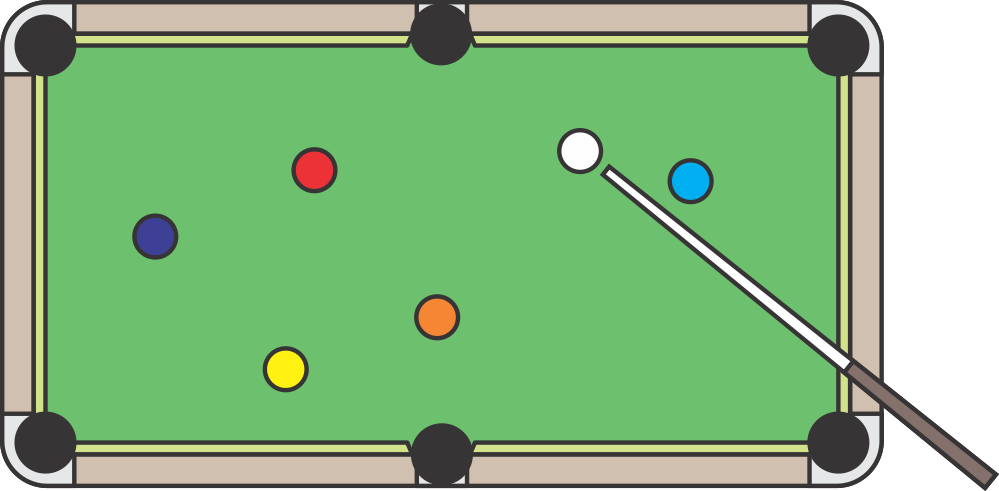
Uma vez que sofre a ação do taco, uma bola se move em movimento retilíneo, até uma das três situações ocorrer: a bola cai em um dos buracos; a bola se choca com a borda da mesa e então a trajetória da bola sofre uma reflexão; ou a bola se choca com outra bola, e então a bola em movimento transfere parte de sua energia para a bola com que se choca. A partir deste momento, duas bolas passam a se mover, de acordo com as mesmas regras acima descritas, e assim sucessivamente.
Quando as bolas se chocam com a borda ou entre si, como podemos identificar a trajetória que cada uma delas passa a ter? Na prática, há dissipação de energia devido a vários fatores como a fricção, portanto não sabemos. Isso ocorre também quando a bola se choca com a borda da mesa: se \(\alpha\) é o ângulo que a trajetória faz com a mesa, medido a partir da direção perpendicular à mesa, então em um contexto ideal o ângulo de reflexão \(\beta\) deve ser igual a \(\alpha\).
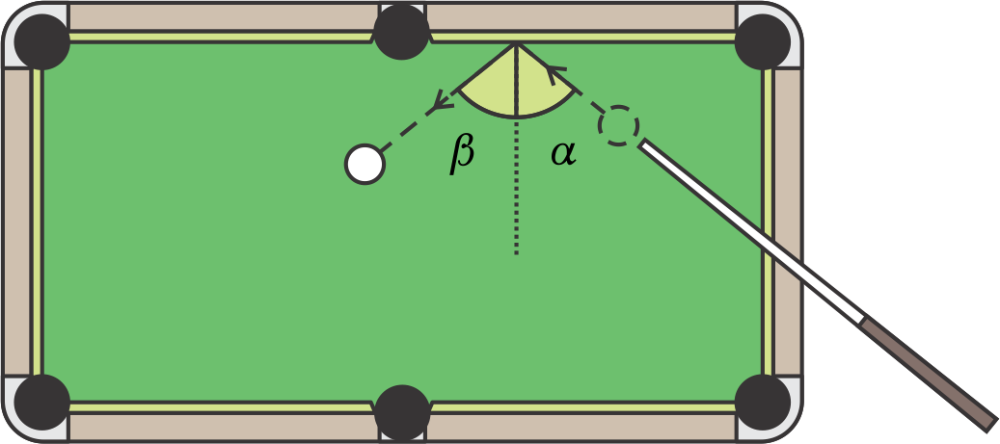
Na prática, \(\alpha\) e \(\beta\) são apenas aproximadamente iguais. Para melhor entender o efeito da borda da mesa no movimento das bolas, no que segue, vamos nos ater a uma situação bem simplificada, assumindo que:
A mesa não possui buracos.
Temos apenas uma bola na mesa. Ela será representada por um ponto, que chamaremos de partícula.
Não há dissipação de energia.
Neste caso, \(\alpha=\beta\). Este contexto caracteriza o que chamaremos de um bilhar dinâmico: dado um domínio compacto \(D\) do plano \(\mathbb R^2\) ou do toro bidimensional \(\mathbb T^2\), que chamaremos de mesa de bilhar, consideramos uma partícula que se move com velocidade constante sobre a mesa e se choca com a borda da mesa, tal que o ângulo de incidência é igual ao de reflexão em cada colisão. No que segue, discutiremos diferentes classes de bilhares dinâmicos. O leitor interessado pode consultar o livro [6] para uma discussão detalhada do tópico.
Começamos considerando o bilhar em um círculo, que assumimos possuir raio 1. Considere três colisões sucessivas, denotadas na figura abaixo por \(A,B,C\). É fácil notar que os triângulos \(ABO\) e \(BCO\) são isósceles, donde \(AB=BC\).
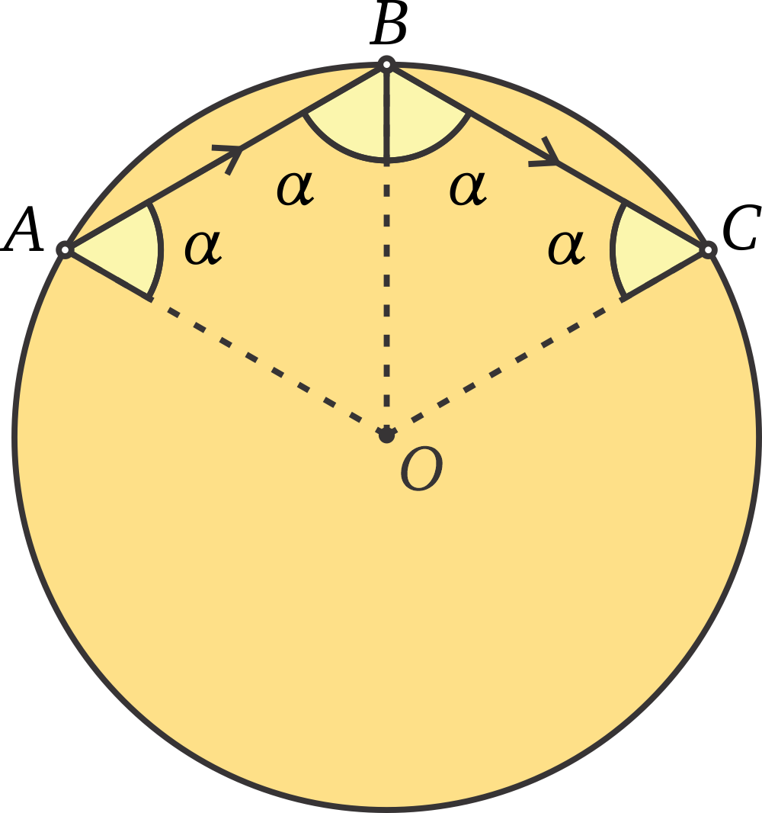
Portanto, todas as cordas determinadas por colisões sucessivas em uma trajetória possuem o mesmo tamanho \(2\ell\). Quando \(2\ell\) coincide com o tamanho do lado de um \(n\)–ágono regular, a trajetória da partícula será periódica, igual a um \(n\)–ágono regular. Mas, em geral, \(2\ell\) difere de todos os tamanhos de lados e diagonais de polígonos regulares, e daí obtemos uma trajetória aperiódica, em que a sequência de batidas nunca fecha.
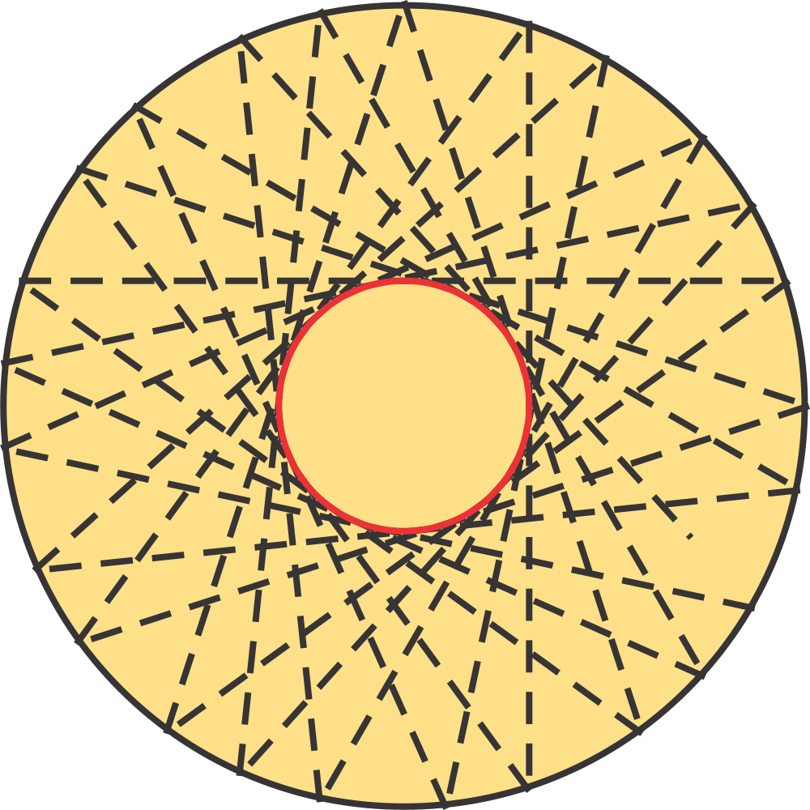
Em ambos os casos, é fácil notar pelo teorema de Pitágoras que as cordas determinadas por uma trajetória são tangentes a um mesmo círculo de raio \(\sqrt{1-\ell^2}\) e concêntrico ao original. Este círculo menor é chamado de cáustica, que em grego significa “queimar”: se imaginarmos que a trajetória da partícula é um raio de luz, então por tangenciar o círculo menor para sempre, ele se aquece indefinidamente, justificando sua nomenclatura.
Agora consideramos uma mesa de bilhar no formato de uma elipse. Relembre que, dados \(F_1,F_2\) dois pontos do plano e \(2a>\overline{F_1F_2}\), a elipse determinada por \(F_1,F_2,2a\) é o conjunto de pontos do plano \[\mathcal E=\{P:\overline{PF_1}+\overline{PF_2}=2a\}.\] Os pontos \(F_1\) e \(F_2\) são chamados focos. Ao contrário do círculo, as retas normais à elipse já não passam todas por um mesmo ponto. Ainda assim, há, felizmente, diversas analogias das trajetórias dos bilhares no círculo e na elipse.
Começamos exibindo exemplos de algumas trajetórias periódicas. Seja \(AB\) o eixo horizontal da elipse. É possível, por exemplo, inscrever um triângulo \(ABC\) na elipse de modo que os ângulos de incidência e reflexão coincidam em cada um dos vértices; isto define uma trajetória periódica com três batidas.
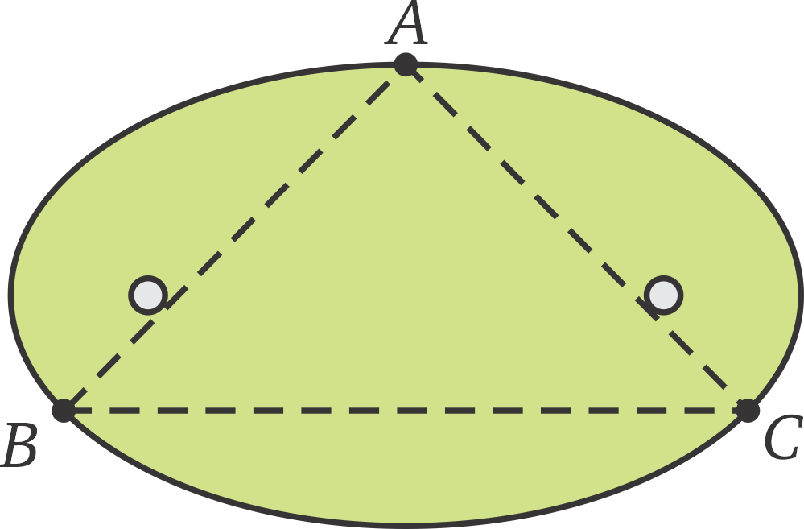
Mais geralmente, para cada \(n\), é possível inscrever uma trajetória periódica de período \(n\) (exatamente \(n\) batidas). Novamente, é muito difícil uma trajetória ser periódica, e a maioria delas é aperiódica, nunca passando por um mesmo ponto de batida. Adicionalmente, o bilhar na elipse também possui cáusticas. Porém, aqui temos dois tipos diferentes delas: se as duas primeiras batidas ocorrem em pontos \(A\) e \(B\) tais que \(AB\) não intersecte o segmento \(F_1F_2\), então todas as cordas desta trajetória são tangentes a uma elipse menor, de mesmos focos \(F_1,F_2\) da original; se \(AB\) intersecta \(F_1F_2\) em seu interior, então existe uma hipérbole \(\mathcal H\) com focos \(F_1,F_2\) tal que todas as cordas determinadas por batidas sucessivas são tangentes a \(\mathcal H\).
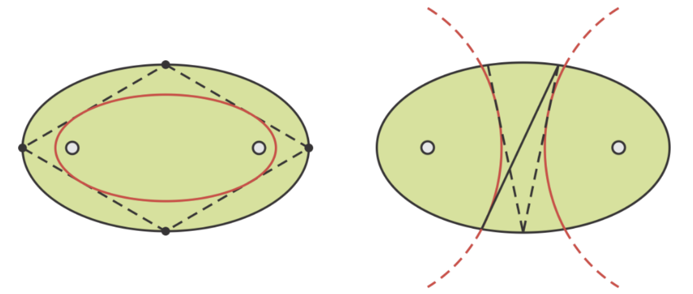
E se o segmento \(AB\) passar por um dos focos, digamos \(F_1\)? Neste caso, o teorema de Poncelet fornece a resposta.
Theorem 1 (Poncelet). Seja \(\mathcal E\) uma elipse de focos \(F_1,F_2\). Dado um ponto \(A\) da elipse, seja \(\ell\) a reta normal à elipse passando por \(A\). Então os ângulos que \(AF_1\) e \(AF_2\) fazem com \(\ell\) são iguais.
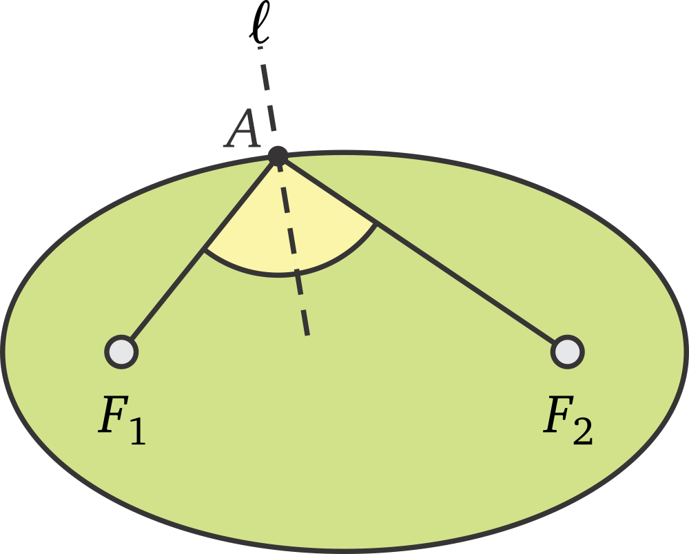
Pelo teorema acima, se \(AB\) passa por \(F_1\), então todas as cordas definidas por batidas sucessivas passam pelos focos, alternadamente. Neste caso, podemos considerar os pontos \(F_1\) e \(F_2\) como cáusticas dessas trajetórias.
As propriedades do círculo e elipse valem, de fato, para qualquer mesa de bilhar convexa (e suficientemente regular). Estes são resultados profundos, decorrentes de argumentos em dinâmica conservativa e teoria KAM (devida a Kolomogorov, Arnold e Moser). O leitor interessado pode consultar [5] sobre este tópico.
Agora focamos no bilhar que estamos mais acostumados, cuja mesa tem formato retangular. Considere uma trajetória como na figura ao lado. Notamos que se o primeiro ângulo de incidência é \(\alpha\), então todos os ângulos serão \(\alpha\) ou \(90^\circ-\alpha\).
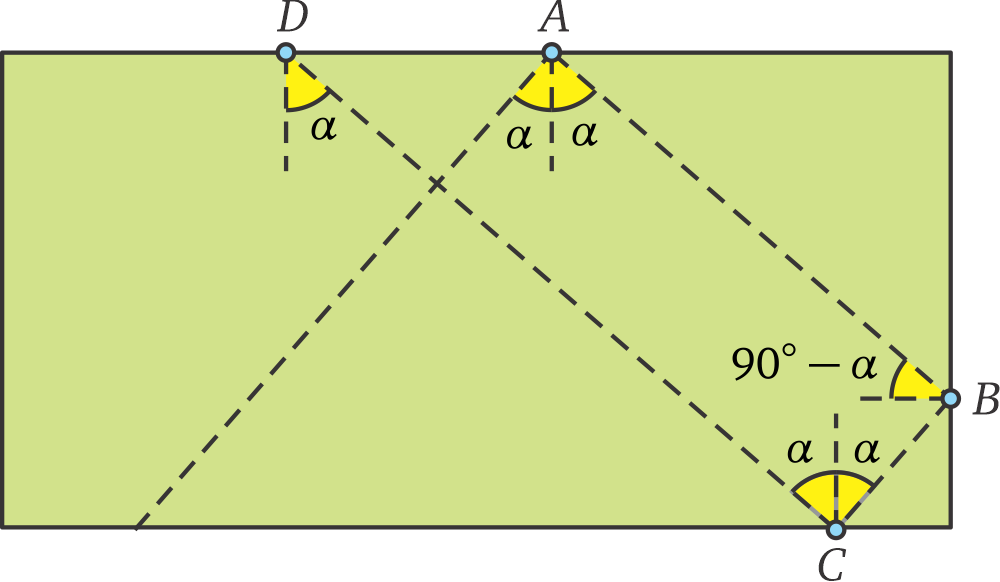
Mesmo assim, a trajetória da partícula pode ser extremamente complicada. Para melhor entender esse comportamento, utilizamos uma ideia advinda da ótica.
Ao invés de refletir a trajetória, refletimos a mesa de bilhar: podemos considerar a trajetória continuando em linha reta nessa mesa refletida, sem nenhuma mudança de ângulo. Podemos realizar esse processo em cada batida, indicando como as orientações dos lados do retângulo mudam. No caso da trajetória da figura acima, que realiza quatro batidas nos pontos \(A,B,C,D\), as reflexões são descritas abaixo. Portanto, após essas quatro colisões, a mesa volta a ser a mesma mesa.
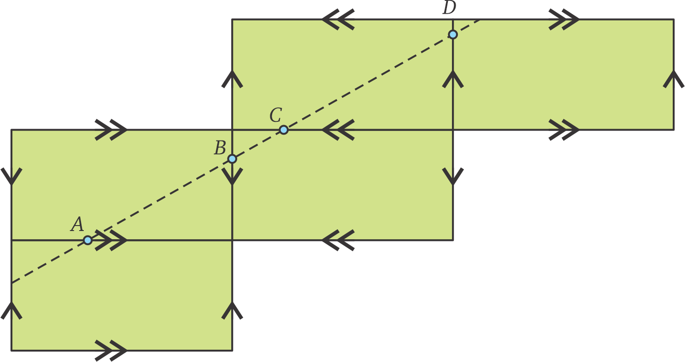
Para melhor entender esse processo, vamos reexplicá-lo de outro modo. Considere a mesa original, e três de suas reflexões como na figura abaixo. Os lados esquerdo e direito coincidem, assim como os lados superior e inferior. Portanto, quando a partícula colide no ponto \(C\), podemos representar a continuação da trajetória no ponto \(C'\) abaixo.
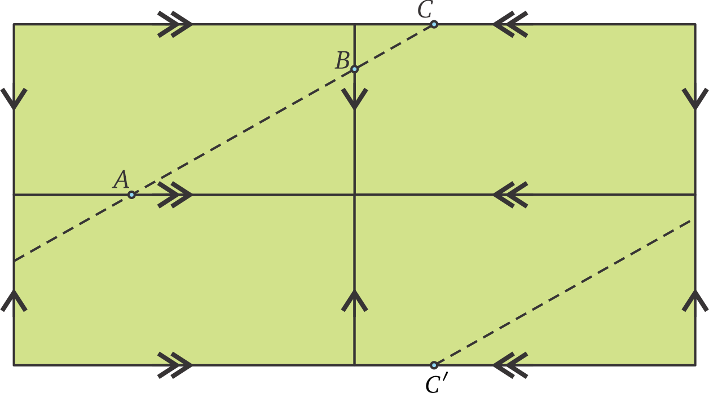
Assim, em uma mesa quatro vezes maior, a trajetória da partícula sempre segue em linha reta, levando-se em conta de que as bordas esquerda e direita são as mesmas, assim como as bordas superior e inferior. Estas identificações definem a mesa maior como sendo o toro bidimensional \(\mathbb T^2\).
Este método pode ser aplicado a qualquer mesa de bilhar poligonal em que os ângulos internos são múltiplos racionais de \(\pi\). Neste caso, o grupo de simetria do polígono é finito, e todas as reflexões possíveis definem uma superfície de translação, onde a trajetória original do bilhar é identificada com uma trajetória retilínea. O estudo de superfícies de translação é uma área que relaciona Geometria, Sistemas Dinâmicos e Topologia, e a partir dela podemos deduzir diversas propriedades interessantes de tais mesas de bilhar. Notamos, porém, que se algum ângulo interno for um múltiplo irracional de \(\pi\), então o problema ainda não possui compreensão satisfatória. O livro [1] possui uma excelente introdução ao tópico de superfícies de translação.
O matemático russo-americano Yakov Sinaı̆ iniciou, no final da década de 1960, um estudo sistemático de bilhares caóticos. Motivado pela ótica, Sinaı̆ considerou bilhares em que o formato do bordo é côncavo do ponto de vista da partícula. Veja um exemplo na figura abaixo.
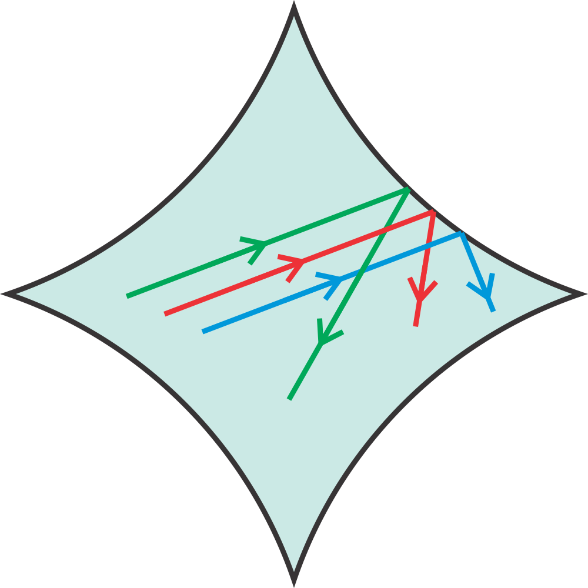
Sempre que um feixe de trajetórias paralelas se choca com o bordo, ele se dispersa. Portanto, se imaginarmos um conjunto de trajetórias inicialmente bem próximas, após algumas batidas elas ficam praticamente independentes, espalhando-se por toda a mesa, indicando uma sensibilidade às condições iniciais.
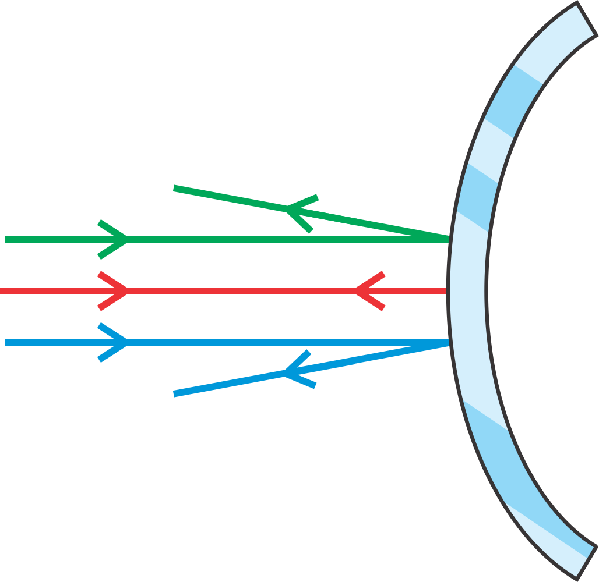
Estes bilhares (em que o bordo sempre é côncavo do ponto de vista da partícula), são hoje conhecidos como bilhares de Sinaı̆ ou bilhares dispersivos. Eles também podem ser construídos no toro bidimensional \(\mathbb T^2\): considerando um domínio fundamental igual a um quadrado de lado 1, considere dois obstáculos circulares, um deles localizado no centro do quadrado e o outro em um dos vértices do quadrado, como na figura abaixo.
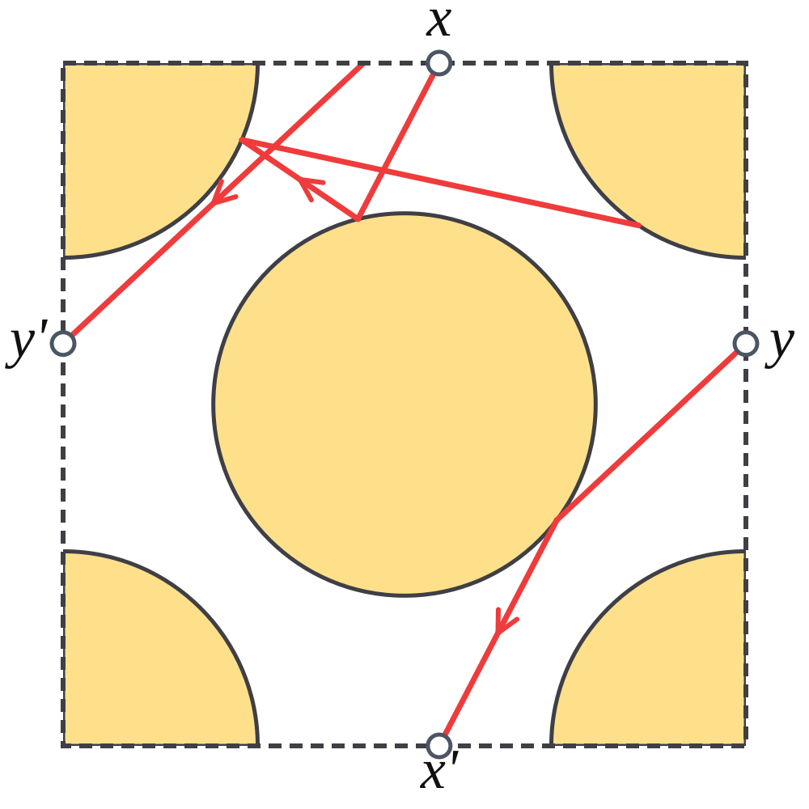
Descrevemos também uma possível trajetória, levando-se em conta as identificações dos lados paralelos.
Sinaı̆ provou diversas propriedades caóticas de tais bilhares. Em particular, ele mostrou que os bilhares dispersivos são ergódicos. Em poucas palavras, este conceito significa que com 100% de chance as trajetórias se espalham por toda a mesa.
Em 1905, o físico teórico e matemático holandês Hendrik Lorentz propôs um modelo que pode ser interpretado como um bilhar dispersivo. Lorentz queria modelar o movimento de um elétron dentro de um metal. Por serem bem mais pesadas do que o elétron, Lorentz assumiu que as moléculas de metal são fixas, cada uma delas representada por uma esfera, e que o elétron se move em linha reta e colide com as moléculas do metal por meio de reflexões elásticas. Este modelo é conhecido como gás de Lorentz. Se imaginarmos que o metal é formado por dois tipos de moléculas, dispostas periodicamente no plano, então o elétron se move em um bilhar dispersivo conforme a figura abaixo.
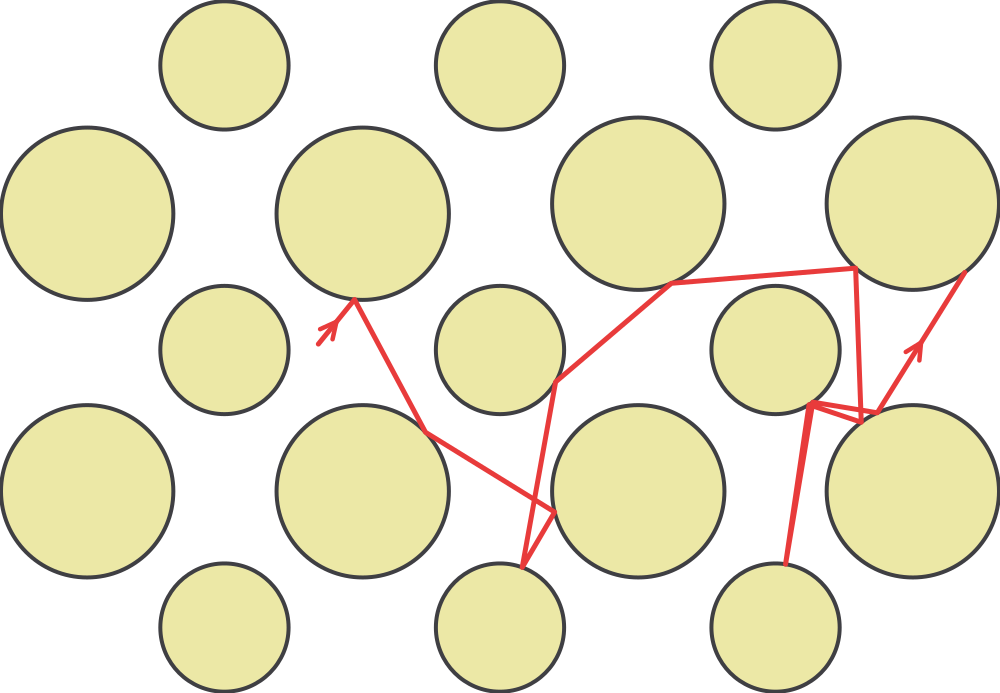
Uma maneira de entender as trajetórias de um bilhar é por meio do sistema dinâmico associado, chamado transformação de bilhar. A transformação de bilhar é a função que, a cada posição \(p\) no bordo da mesa \(D\) e ângulo \(\alpha\) medido em \(p\) com respeito à reta normal, associa a próxima posição de batida \(p'\) e o próximo ângulo de incidência \(\alpha'\). Em outras palavras, \(f(p,\alpha)=(p',\alpha')\) descreve a evolução da trajetória que começa a partir da condição inicial \((p,\alpha)\). A iteração de \(f\) uma quantidade \(n\) de vezes fornece \(f^n(p,\alpha)=(p_n,\alpha_n)\) onde \(p_n\) é a posição da \(n\)–ésima batida e \(\alpha_n\) é o ângulo de incidência associado.
Esperando que \(f\) exiba um comportamento caótico, a sequência de pontos \((p_n,\alpha_n)\) deve ser bastante variada. Uma das maneiras de entender esta variabilidade é por meio da teoria ergódica, área que estuda o comportamento de sistemas dinâmicos na presença de probabilidades invariantes. Informalmente, uma probabilidade é invariante se a evolução no tempo por \(f\) preserva o “tamanho” dos conjuntos. Formalmente, se \(f:X\to X\) é uma transformação, então uma probabilidade \(\mu\) em \(X\) é \(f\)–invariante se \[\mu(f^{-1}A)=\mu(A)\] para todo conjunto \(A\) (a definição precisa requer a discussão de conjuntos mensuráveis e sigma-álgebra, que não faremos aqui). Do ponto de vista probabilístico, isto diz que a chance de tomar um ponto \(x\) aleatoriamente e ter que \(x\in A\) coincide com a chance de que \(f(x)\in A\).
Esta propriedade é encontrada em modelos advindos da física. Na verdade, tais modelos possuem, em geral, diversas probabilidades invariantes. Como descrever aquela que possui a maior quantidade de caos? Uma das maneiras de responder a esta pergunta é por meio da noção de entropia. Motivados pelas ideias de teoria da informação desenvolvidas por Shannon na década de 1950, Kolmogorov e Sinaı̆ desenvolveram uma teoria que, a cada probabilidade invariante \(\mu\), associa um número não-negativo \(h(\mu)\), chamado entropia de \(\mu\).
Formalmente, para cada partição \(\mathscr{P}=\{A_1,\ldots,A_k\}\) de \(X\), definimos a entropia de \(\mathscr{P}\) com respeito à probabilidade \(\mu\) por \[H(\mathscr{P})=-\sum_{i=1}^k \mu(A_i)\log\mu(A_i).\] Este número, que é não-negativo, pode ser interpretado da seguinte forma: tomando-se “aleatoriamente” um ponto \(x\in X\), qual o preço que devemos pagar para saber qual \(A_i\) contém \(x\)? Este preço é igual a \(H(\mathscr{P})\).
Agora queremos saber o preço a ser pago para tomar \(x\in X\) e saber em quais elementos de \(\mathscr{P}\) caem os pontos \(x,f(x),\ldots,f^{n-1}(x)\). Este preço é igual a \[H(\mathscr{P}; n)=-\sum_{B\in \mathscr{P}_n} \mu(B)\log \mu(B),\] onde a soma é realizada sobre todos os conjuntos \(B\) da forma \(A_{i_0}\cap f^{-1}(A_{i_1})\cap\cdots f^{-(n-1)}(A_{i_{n-1}})\). A entropia de \(\mu\) com respeito a \(\mathscr{P}\) é definida como a taxa de crescimento linear de \(H(\mathscr{P};n)\): \[h(\mu,\mathscr{P})=\lim_{n\to+\infty} \frac{1}{n}H(\mathscr{P};n).\] Finalmente, definimos a entropia de \(\mu\).
Definition 2 (Entropia). A entropia de \(\mu\) com respeito a \(f\) é definida por \[h(\mu)=\sup\{h(\mu,\mathscr{P}):\mathscr{P}\text{ partição finita}\}.\]
Intuitivamente, se a entropia de \(\mu\) é \(h\), então tipicamente o número de sequências observáveis de comprimento \(n\) cresce como \(e^{hn}\). Portanto, quanto maior \(h\), maior a riqueza de trajetórias.
Uma discussão mais precisa sobre este conceito pode ser encontrada em [9].
Dentre as probabilidades, a que identifica a maior caoticidade de \(f\) é a que tem a maior entropia.
Definition 3 (Medida de máxima entropia). Dizemos que uma probabilidade invariante \(\mu\) é medida de máxima entropia para \(f\) se, dentre todas as probabilidades invariantes, \(\mu\) maximiza a entropia: \[h(\mu)=\sup\{h(\nu):\nu\text{ é probabilidade invariante}\}.\]
Entender quando uma transformação \(f\) possui uma medida de máxima entropia e se ela é única constitui uma intensa área de pesquisa em Sistemas Dinâmicos. Desde a década de 1970, esta pergunta vem sendo investigada para diversas classes de modelos diferentes. Nos últimos dez anos, presenciamos os primeiros resultados para os bilhares dispersivos (sim, apenas recentemente estas perguntas foram respondidas, ainda que de modo parcial). Hoje em dia, diversos trabalhos contribuíram para uma melhor compreensão desta pergunta:
Baladi e Demers provaram que uma grande classe de bilhares dispersivos possuem uma única medida de máxima entropia [2].
Baladi, Buzzi, Demers, Lima e Matheus mostraram que o número de trajetórias periódicas desta grande classe de bilhares dispersivos cresce exponencialmente rápido como \(e^{hn}\), onde \(h\) é a entropia máxima [2,3,7].
Lima, Obata e Poletti mostraram que os bilhares dispersivos possuem no máximo uma medida de máxima entropia “bem comportada” (chamada de adaptada) [8].
Em 2026, Climenhaga e Day forneceram uma prova de que os bilhares dispersivos sempre possuem uma única medida de máxima entropia [4].
Notamos que uma trajetória periódica do bilhar não significa apenas que a trajetória passa novamente pelo mesmo ponto de partida da mesa, mas que ela deve voltar também com o mesmo ângulo! Até em bilhares dispersivos simples, identificar tais trajetórias não é uma tarefa simples.
As ferramentas utilizadas nas provas dos resultados acima são bastante variadas, e ajudaram a desenvolver a área com novas técnicas que agora podem ser aplicadas em outros contextos.
Ainda há, porém, muito a ser compreendido. Deixamos aqui um problema que permanece em aberto, para bilhares triangulares. Se o triângulo for acutângulo, então o triângulo órtico constitui uma trajetória periódica de período três. Se o triângulo for obtusângulo, então não se sabe se existem trajetórias periódicas.
[1] Athreya, Jayadev S. e Masur, Howard, Translation surfaces, Graduate Studies in Mathematics 242 (2024).
[2] V. Baladi e M. Demers, On the measure of maximal entropy for finite horizon Sinai billiard maps, J. Amer. Math. Soc. 33 (2020).
[3] J. Buzzi, The degree of Bowen factors and injective codings of diffeomorphisms, J. Mod. Dyn. 16 (2020).
[4] Vaughn Climenhaga e Jason Day, Every finite horizon Sinai billiard map has a unique measure of maximal entropy, arxiv:2604.25881
[5] J. Fejoz, Introduction to KAM theory, with a view to celestial mechanics, in Variational methods in imaging and geometric control Radon Series on Comput. and Applied Math. 18, (2016).
[6] N. Chernov e R. Markarian, Chaotic billiards. Math. Surveys Monogr. 127 (2006).
[7] Y. Lima e C. Matheus, Symbolic dynamics for non-uniformly hyperbolic surface maps with discontinuities, Ann. Sci. Éc. Norm. Supér. (4) 51 (2018).
[8] Yuri Lima, Davi Obata e Mauricio Poletti, Measures of maximal entropy for non-uniformly hyperbolic maps, aceito em JEMS (2026).
[9] M. Viana e K. Oliveira, Fundamentos da Teoria Ergódica. Sociedade Brasileira de Matemática (2019).
Yuri Lima é Professor Titular da Universidade de São Paulo, com graduação e mestrado pela Universidade Federal do Ceará e doutorado pelo IMPA. Realizou estágios de pós-doutorado no IMPA, no Weizmann Institute of Science, na University of Maryland e na Université Paris-Sud 11, e foi Professor Adjunto da UFC entre 2017 e 2024. Atua em Sistemas Dinâmicos, Teoria Ergódica, Combinatória e Probabilidade, tendo recebido distinções como a Royal Society-Newton Advanced Fellowship, menção honrosa no Prêmio SBM e o Prêmio Jacob Palis ABC-Fulbright. Nas horas vagas, é frequentador assíduo das praias do Ceará, onde pratica kitesurfe.